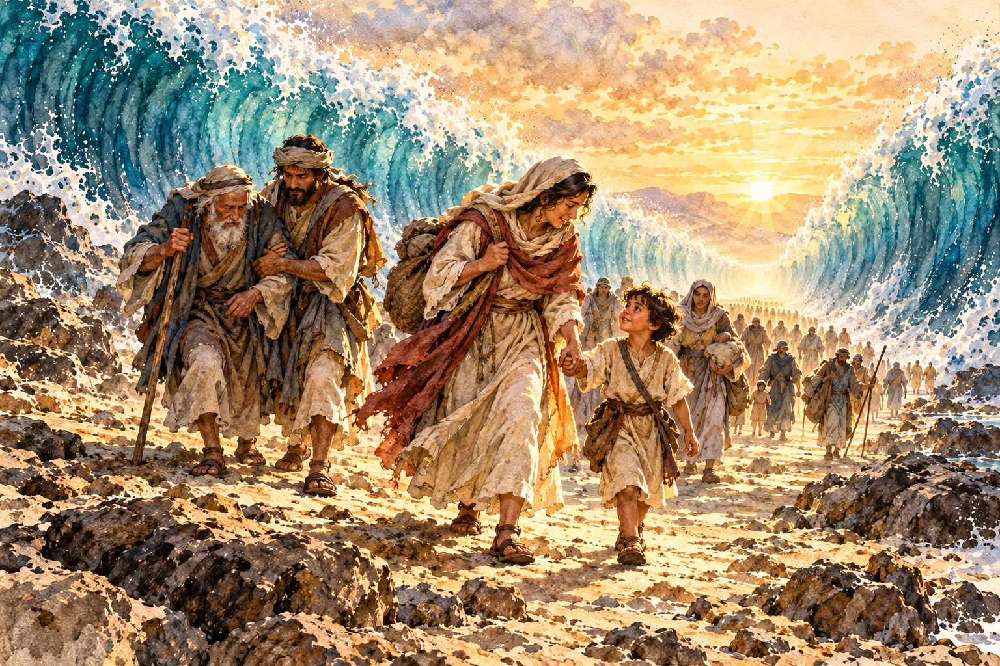
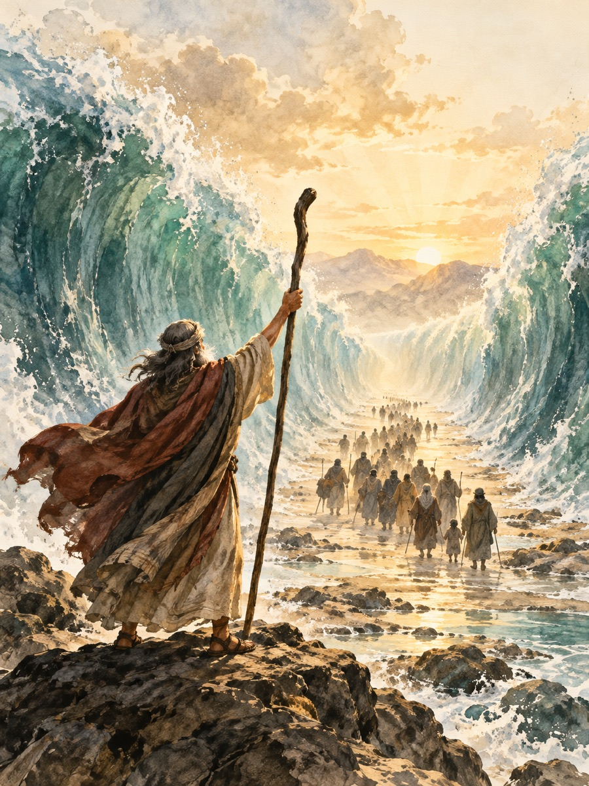

有些困難，會把人逼到連禱告都只剩下一句話：「主啊，救救我。」
眼前的問題沒有解決，身後的壓力又追了上來。我們知道應該信靠上帝，心裡卻仍然害怕：如果事情沒有好轉，接下來該怎麼辦？
2011年，回台中開拓教會的第一年，有一段時間家裡沒有收入，只能靠積蓄過日子。孩子要念幼兒園，家裡要吃飯，教會也常有不足。白天忙過去了，到了晚上，腦袋卻停不下來。
我躺著想這件事，又想到另一件事，一轉眼就到了天亮。師母早上起來，問我怎麼不睡。我只能告訴她，不是不想睡，是太多事情放不下。那時我很怕明天來了，自己卻沒有辦法照顧好一家人，也不知道教會接下來該怎麼走。
後來，我經歷了上帝的醫治。回想那段失眠的日子，我知道，向主呼求的，並不是一個已經想好辦法的人。那時的我，真的需要祂幫助。
能向上帝呼求，是恩典。我們不必在祂面前裝作堅強，也不必等到情緒平靜，才把困難告訴祂。
可是，禱告有時也會帶我們走到一個轉折：當我們把需要帶到主面前，祂可能會讓我們看見，有一件事，
是我們接下來需要去做的。
也許是開口求助，也許是承認錯誤，也許是重新整理一個拖延已久的計畫。
這時，禱告便有了可以回應的方向。我們仍然倚靠祂，也開始學習，照著祂的帶領採取行動。
走到海邊，心卻想退回去
《出埃及記》第十四章記載，以色列人離開埃及之後，來到海邊安營。法老卻改變心意，帶著車輛與軍兵追了上來。
百姓舉目，看見埃及人逼近，就非常害怕，向耶和華哀求。
眼前是海，後面是追兵。曾經使他們歡喜的出走，如今看來竟像是一場錯誤。
他們開始責怪摩西，甚至認為，留在埃及作奴僕，也比死在曠野好。
恐懼有時會使人這樣：明明知道過去的生活充滿捆綁，卻因為前方陌生，就想退回熟悉的地方。至少，在那裡，自己知道該怎麼活。
我們也可能經歷類似的掙扎。
下定決心修復一段關係，第一次談話卻更尷尬；願意調整服事的方式，卻碰上新的阻力；開始面對自己長久逃避的問題，才發現事情比想像中複雜。
於是，我們忍不住懷疑：「是不是不要改變，反而比較好？」
海邊的百姓，正站在這樣的拉扯裡。他們需要拯救，
也需要在驚慌中重新認識：帶領他們離開埃及的上帝，仍然與他們同在。
從呼求，走向回應
摩西對百姓說：「不要懼怕，只管站住！」他要他們看耶和華將要施行的拯救，相信上帝會為他們爭戰。
「耶和華必為你們爭戰；你們只管靜默，不要作聲。」
接著，耶和華對摩西說：
「你為甚麼向我哀求呢？你吩咐以色列人往前走。」
上帝也吩咐摩西舉手，向海伸杖，並告訴他，以色列人要從海中的乾地走過去。
讀到這裡，我們可能會納悶：百姓才被吩咐站住，怎麼接著又要往前走？
把前後的話放在一起，我們便看見：百姓可以倚靠上帝的拯救，也需要回應祂接下來的吩咐。摩西要他們在恐懼中安定下來，主的話則給了他們前行的方向。
因此，「你為甚麼向我哀求呢」這句話，需要放在這個處境裡理解。上帝已經指示摩西該怎麼做；此刻，他需要把所領受的話，帶進接下來的行動。
「別再哀求」，也是這個意思：當主已經指明下一步，我們要學習在呼求之後，繼續回應祂。
我們可以一面禱告，一面開始整理問題；可以帶著害怕，打出那通求助的電話；可以在仍然難過的時候，承認自己應該承擔的責任。
有些時候，信心就表現在這裡：心裡仍有波動，卻願意照著已經明白的真理，作出一個回應。
使海分開的，是上帝
這段故事裡，有一個細節值得我們留意。
在百姓過海之前，上帝的使者與雲柱轉到他們後方，隔開以色列人與埃及的軍隊，使追兵無法靠近。
百姓還沒有走過海，上帝已經在保護他們。
後來，摩西向海伸杖，耶和華用大東風，使海水一夜退去，海成了乾地，以色列人便從其中走過。
摩西照著吩咐伸杖，百姓也走上主所開出的路；托住這一切的，是上帝的作為。他們沒有能力分開海水，也無法靠自己的勇敢，使追兵停下。
這幫助我們把責任放回合宜的位置。
我們需要回應主，卻不必把成就一切的重量，全部背在自己肩上。若以為只要自己夠勇敢、夠積極，所有困難就應該迎刃而解，當事情沒有照著期待發展時，我們很容易陷入自責，也可能開始懷疑上帝。
紅海的記載，讓我們看見一位主動拯救、信實帶領的上帝。我們因為信靠祂，才有勇氣承擔今天能做的事；至於那些超過自己能力的部分，仍然可以交在祂手中。
摩西需要伸出手中的杖。使海分開的工作，屬於上帝。

舉起你手中的杖
回到我們的生活，「舉起你的杖」，可以成為一個提醒：看看自己已經領受了什麼，也看看眼前有什麼責任，正在等候我們回應。
那可能是一項能夠派上用場的專業，一段願意付出的時間，一個可以尋求協助的管道，或是一句早該說出口的道歉。
面對家庭的裂痕，我們也許無法立刻恢復彼此的信任，卻可以先停止一句傷人的話，認真聽對方把感受說完。
面對服事的缺口，我們也許無法一次補足人力與經費，卻可以先把需要整理清楚，邀請同工一起討論，尋找可以承擔的部分。
面對一位陷入困難的弟兄姐妹，我們也許沒有現成的答案，卻可以陪他坐一會兒，問清楚他需要什麼，必要時再一起尋求合適的幫助。
這些行動，看起來都很普通。但當我們願意認真去做，禱告中的關切，就能在生活裡成為實際的照顧。
「舉杖」也提醒我們，信心的回應可以很具體。它需要分辨、預備，有時也需要請教與合作。承認自己的不足，願意讓別人一起承擔，同樣是往前走的一部分。
走過紅海的是一群百姓。想到他們一同前行的情景，我們也可以問：在今天的信仰旅程裡，有誰需要我伸出手，陪他一起走？
此刻，你也許仍然站在一片看似沒有出口的海前。
先把害怕告訴主，然後問祂：「在這個處境裡，有什麼是我已經明白、今天可以去做的？」
如果看見了，就從那裡開始。
把手中的杖舉起來，忠心回應祂，也把超過自己能力的部分交託給祂。你可以繼續禱告，也可以在禱告中，走出今天的一步。
M+ 實戰操練
反思提問（Connection）
你現在正面對哪一片難以跨越的「紅海」？最令你害怕的是什麼？
在這件事上，有哪些需要是你無法獨自承擔、必須向主和人求助的？又有哪一件事，是你已經知道應該做，卻仍然遲遲沒有回應的？
真理宣告（Transition）
我宣告，上帝是我的拯救，也是我面對困境時的倚靠。
我可以把害怕與無助帶到祂面前，也願意在領受帶領之後，忠心回應。我不把一切結果都壓在自己肩上，卻願意認真承擔今天能做的事。
主啊，求祢教導我分辨、賜給我勇氣，使我的禱告與行動，都扎根在對祢的信靠裡。
今日行動（Action Plan）
為你目前面對的一個難題，寫下兩件事：一件是你需要交託、無法掌握的事；另一件是你今天可以採取的行動。
為前者禱告，也把後者具體排進今天的時間裡。
可以打出一通求助的電話，整理一份討論的草稿，向一個人真誠道歉，或主動關心那位一直放在你心上的弟兄姐妹。
完成之後，安靜向主禱告：
「主啊，我把今天能做的交在祢面前，也把自己做不到的交託給祢。求祢繼續引導我，讓我在每一次回應中，學會倚靠祢。」
